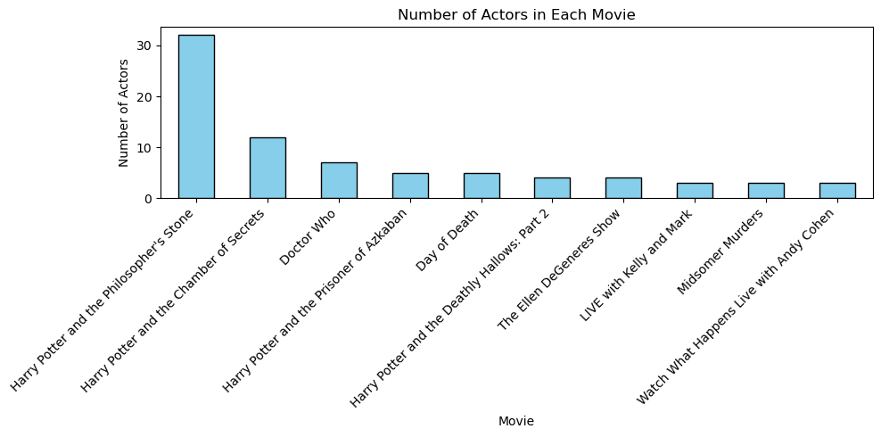

import scrapy
class TmdbSpider(scrapy.Spider):
name = 'tmdb_spider'
def __init__(self, subdir="", *args, **kwargs):
self.subdir = subdir
self.start_urls = [f"https://www.themoviedb.org/movie/{subdir}/"]
#To be implemented below
def parse(self, response):
pass
def parse_full_credits(self, response):
pass
def parse_actor_page(self, response):
passIntroduction
In this post we are going to scrape themoviedb and try to construct a recommender system for new movies we might want to see. To do this, we will use scapy, pandas, and matplotlib.
Scraping
First, lets break down our spider class and its associated methods.
Here we initialize our spider and give it a name: “tmdb_spider”. We initialize the link to the movie’s homepage with the f-string f"https://www.themoviedb.org/movie/{subdir}/".
Now we need to extract the link to the credits page where the cast can be found. Then we can srape the other films they have been in.
def parse(self, response):
full_url = response.urljoin(f"/movie/{self.subdir}/cast")
#self.logger.info(f"Following cast page: {full_url}")
yield scrapy.Request(url=full_url, callback=self.parse_full_credits)The method below will use the xpath method to retreive the list of actors in the cast, and then retreive the link to that actors page from their associated a-tag.
The xpath "//*[@id='media_v4']/div/div/section[1]/ol/li" directs to the list of cast members.
def parse_full_credits(self, response):
actors = response.xpath("//*[@id='media_v4']/div/div/section[1]/ol/li")
for actor in actors:#loop through actors
link = actor.xpath(".//a/@href").get()
full_link = response.urljoin(link) #fixes link
yield scrapy.Request(url = full_link, callback = self.parse_actor_page)This final method below will scrape the actors page for the movies hehas acted in and these these with the actors name individually in the following format:
{"actor": actor_name,"movie": movie_name.strip()}
We have to grad the actors name again, so we do so from this page in the first line. We have to pull the movies the actor has been from a bdi tag, there aren’t many bdi tags on these actor pages and it is harder to grab specific ones, so we can just filter out the bdi tags we dont without to much hassle. We filter out bdi tags if their text is one of the elements in ['Personal Info', 'Known For', 'Known Credits', 'Gender', 'Birthday', 'Place of Birth', 'Also Known As']. This may not be a clean way of doing things, but such round-about methods are often necessary in the messy job of web scraping.
To run this, use this command in the directory of your project: scrapy crawl tmdb_spider -o results.csv -a subdir=671-harry-potter-and-the-philosopher-s-stone
This will store the results of our scraping in “results.csv”.
def parse_actor_page(self, response):
actor_name = response.xpath("//*[@id='media_v4']/div/div/div[2]/div/section[1]/div/h2/a/text()").get()
movies = response.xpath("//bdi/text()").getall()
for movie_name in movies:
if movie_name not in ['Personal Info', 'Known For', 'Known Credits', 'Gender', 'Birthday', 'Place of Birth', 'Also Known As']:
yield {
"actor": actor_name,
"movie": movie_name.strip()
}Data analysis
Now we can import pandas and start looking at how to construct a recommender system from “results.csv”. We will use Harry Potter and the Philosoper’s Stone because because I have watched this movie maybe three times and think its pretty good. It is also a big production with a large cast so this should give us lots of data.
import pandas as pd
data = pd.read_csv("results.csv")
df = pd.DataFrame(data)
df| actor | movie | |
|---|---|---|
| 0 | Daniel Radcliffe | Harry Potter and the Philosopher's Stone |
| 1 | Daniel Radcliffe | Harry Potter and the Chamber of Secrets |
| 2 | Daniel Radcliffe | Harry Potter and the Prisoner of Azkaban |
| 3 | Daniel Radcliffe | Harry Potter and the Goblet of Fire |
| 4 | Daniel Radcliffe | Harry Potter and the Deathly Hallows: Part 2 |
| ... | ... | ... |
| 1084 | Geraldine Somerville | The Black Velvet Gown |
| 1085 | Geraldine Somerville | Performance |
| 1086 | Geraldine Somerville | Agatha Christie's Poirot |
| 1087 | Geraldine Somerville | Casualty |
| 1088 | Geraldine Somerville | The Bill |
1089 rows × 2 columns
We count the number of times the a movie is listed in our data set and sort by frequency. This should provide a good metric for movies we might like as the root of our scrapping(philosopher’s stone) appears first along with other movies in the series. This makes sense becuase every actor in the data set was in the movie in the root, and many were rehired for the other films in the series.
actor_counts = df.groupby("movie")["actor"].nunique()
actor_counts = actor_counts.sort_values(ascending=False).head(20)
actor_countsmovie
Harry Potter and the Philosopher's Stone 32
Harry Potter and the Chamber of Secrets 12
Doctor Who 7
Harry Potter and the Prisoner of Azkaban 5
Day of Death 5
Harry Potter and the Deathly Hallows: Part 2 4
The Ellen DeGeneres Show 4
LIVE with Kelly and Mark 3
Midsomer Murders 3
Watch What Happens Live with Andy Cohen 3
Dancing with the Stars 3
Performance 3
Harry Potter and the Order of the Phoenix 3
Harry Potter and the Half-Blood Prince 3
Harry Potter and the Goblet of Fire 3
Super Gran 3
Harry Potter and the Deathly Hallows: Part 1 3
The Kelly Clarkson Show 3
Schoolhouse Rock! 50th Anniversary Singalong 2
The View 2
Name: actor, dtype: int64To conclude, we will plot a nice histogram of our sorted data using pyplot.
import matplotlib.pyplot as plt
plt.figure(figsize=(10, 5))
actor_counts.head(10).plot(kind="bar", color="skyblue", edgecolor="black")
plt.xlabel("Movie")
plt.ylabel("Number of Actors")
plt.title("Number of Actors in Each Movie")
plt.xticks(rotation=45, ha="right") #rotate labels for readability
plt.tight_layout()
plt.show()